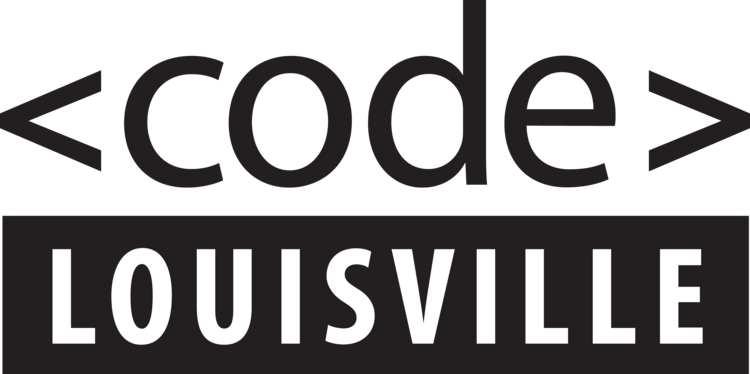

We’ve been training new programmers and placing them in quality tech careers since 2015.

Learning Pathways
Web Development with Javascript
Learn how to build, create, and maintain websites. Front-end developers craft the look and feel of a website that is visible to the end user.
Data Analysis with Python
Use raw data to find trends and answer questions. You’ll learn crucial Python and SQL skills necessary for advanced analytics.
Software Development with C#
In this pathway, you’ll learn how to create a computer program that completes a specific task or set of tasks.
User Experience (UX) Design
Learn how to research, analyze, create designs that software developers will use to create applications.
Quality Assurance Testing
Learn about the tools and code used to test all kinds of software to ensure the highest quality products are produced.
Two Courses For Every Pathway!
All of these pathways contain two 12-week courses, the first introducing you to the concept and the second expanding on it in more detail.
I’m very happy I followed my curiosity and got into this field. It can be challenging at times, but I enjoy the challenge.
- Djuan Ellis, Code Louisville graduate and full-time developer
Requirements:
In order to participate in Code Louisville, you must be 18 or older, looking to enter the tech industry as a career, and reside in one of the following counties: Jefferson, Oldham, Bullitt, Shelby, Spencer, Henry, or Trimble.